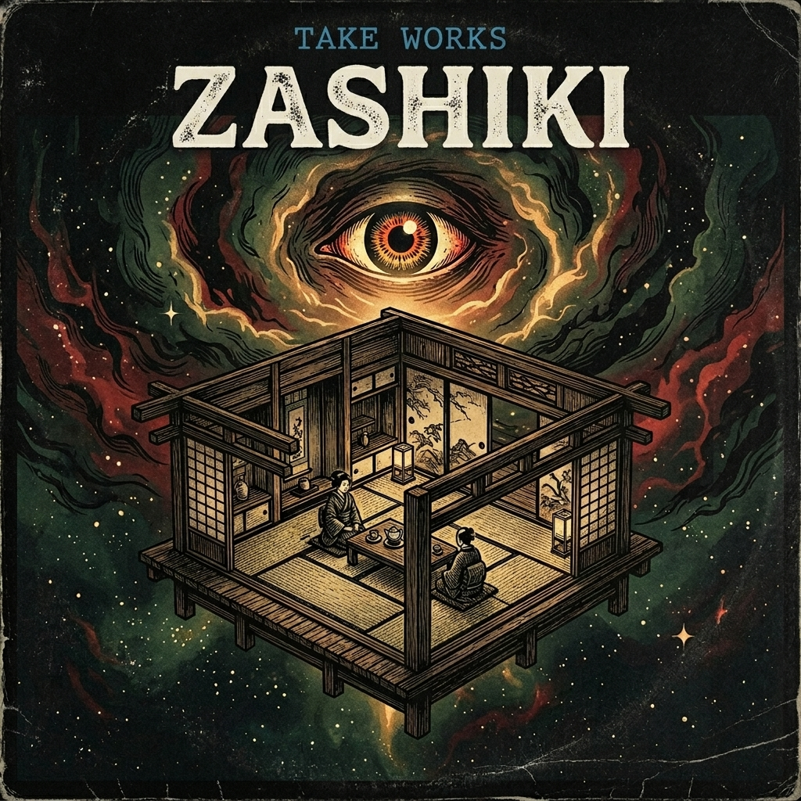

CONTENT
作品と発信のすべて。
音楽・記事・思想・日常。すべてのプラットフォームをここで繋ぐ。
AI MUSIC PRODUCER / CREATOR
Producing music, creating content, and educating through AI & HIPHOP.
AIとHIPHOPを活用し、楽曲制作・発信・教育を行っています。
AIの登場によって、頭の中にあるアイデアを誰もが音楽として形にできる時代が始まりました。 かつては専門的な機材と知識が必要だったことが、今は誰でもできる。
わたしはHIPHOPという文化を通して、その可能性を探求しています。 楽曲制作だけでなく、MV制作、発信、配信まで—— ひとりで音楽活動を完結できる時代を、自分自身で証明し続けています。
わたしが目指しているのは、「作れる人を増やすこと」です。 音楽の民主化。それが、この活動のテーマです。
AIとクリエイティブの力で、もっと多くの人が表現できる未来を作っていきます。

和のテイストとLo-Fiビートが融合した7曲。AIで制作された、新しい音楽の形。

AI音楽の検証プロセスや制作手法など、深い探求の記録。
AIを用いた映像生成の過程で起きた予期せぬ変化と、そこから生まれた新しい表現の可能性について。
AI全盛の時代において、人間が音楽に込める「意味」や「文脈」の重要性を再定義するリリースノート。
生成された音源をそのまま使うのではなく、DAWを用いてプロフェッショナルな音質へと昇華させる実践的なワークフロー。
アイデア出しから映像生成、編集まで。AIツールを駆使した超高速なMV制作のリアルなタイムラインと実践記録。
音楽・記事・思想・日常。すべてのプラットフォームをここで繋ぐ。
音楽制作・コンテンツ制作・取材・その他ご相談は公式LINEよりお気軽にご連絡ください。
基本的に48時間以内にご返信します。